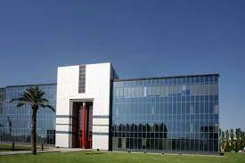

Auspeddaw es un empresa del sector cuidado de salud, creado en Inglaterra 1985 por Marc Maulerio, enfocado en investigación, creación de medicamentos, materiales médicos y equipos médicos.
La empresa Auspeddaw tiene varias cedes en el Mundo; Estados Unidos, Noruega, Inglaterra, España y Japón, con más de 100.000 empleados.
La empresa cotiza en la bolsa de Nueva York NYSE a 150$ por acción con las siglas APD.
